13 Elliptic Partial Differential Equations
13.1 The Laplacian (an Intuitive Description)
The Laplacian operator
\[ \nabla^2 =\frac{\partial^2}{\partial x^2} +\frac{\partial^2}{\partial y^2} +\frac{\partial^2}{\partial z^2}\]
is probably the most important operator in mathematical physics. \(\,\)The question is, \(\,\)what does it mean and why should the sum of three second derivatives have anything to do with the laws of nature?
The answer to this lies in the fact that the Laplacian of a function allows us to compare the function at a point with the function at neighboring points. \(\,\)It does what the second derivative did in one dimension and might be thought of as a second derivative generalized to higher dimensions
\(~\)
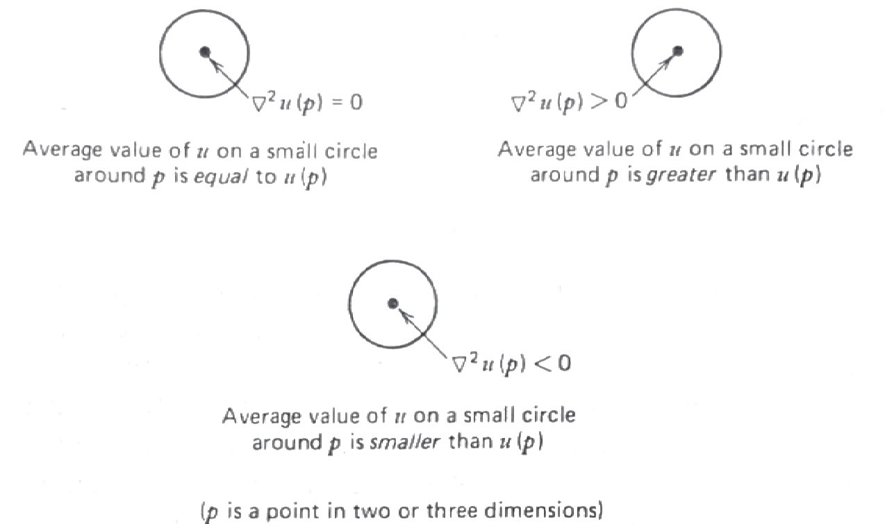
\(~\)
The heat equation \(\,u_t=\alpha\nabla^2 u\,\) measures temperature \(\,u\), and the equation can be interpreted to mean that the change in temperature with respect to time \(\,u_t\) is proportional to \(\,\nabla^2 u\). \(\,\)That is, \(\,\)the temperature at a point is increasing if the temperature at that point is less than the average of the temperature on a circle around the point
The wave equation \(\,u_{tt}=c^2\nabla^2 u\,\) measures the displacement of a drumhead and can be interpreted to mean that the acceleration (or force) of a point on the drumhead \(\,u_{tt}\,\) is proportional to \(\,\nabla^2 u\). \(\,\)That is, \(\,\)the drumhead at a point is accelerating upward if the drumhead at that point is less than the average of its neighbors
Laplace’s equation \(\,\nabla^2 u = 0\,\) says that the solution \(\,u\,\) is always equal to the average of its neighbors. \(\,\)For example, \(\,\)a steady-state, stretched rubber membrane satisfies Laplace’s equation, \(\,\)hence, \(\,\)the height of the membrane at any point is equal to the average height of the membrane on a circle around the point
Poisson’s equation \(\,\nabla^2 u=f\), \(\,\)where \(\,f\,\) is a function that depends only on the space variables
- \(\nabla^2 u=-\rho\,\) describes the potential of an electrostatic field where \(\,\rho\,\) represents a constant charge density
- \(\nabla^2 u =-g(x,y)\,\) describes the steady-state temperature \(\,u(x,y)\,\) due to a heat source \(\,g(x,y)\)
\(\nabla^2 u +\lambda u =0\,\) is known as the Helmholtz equation which describes the fundamental shapes of a stretched membrane
\(~\)
Changing Coordinates
Before we start, \(\,\)however, \(\,\)let’s review briefly the three major coordinate systems in two or three dimensions except for Cartesian system:
Polar Coordinates
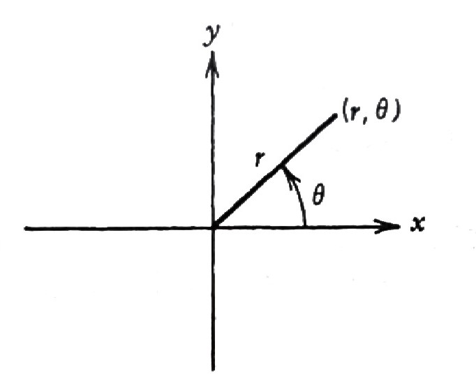
\[\begin{matrix} x = r\cos\theta \\ y = r\sin\theta \, \\ \end{matrix} \;\; \Rightarrow \;\; \begin{matrix} r^2 = x^2 + y^2 \;\;\;\\ \tan\theta = y/x \;\;\;\;\; \end{matrix}\]
As an illustration, \(\,\)we see how the two-dimensional Laplacian is transformed into polar coordinates:
\[\scriptsize \begin{aligned} \nabla^2u &= u_{xx} +u_{yy}\\ &\Updownarrow \\ u_x = u_r r_x +u_\theta \theta_x &= u_r \cos\theta -u_\theta \frac{\sin\theta}{r}\\ u_y = u_r r_y +u_\theta \theta_y &= u_r \sin\theta +u_\theta \frac{\cos\theta}{r}\\ &\Downarrow \\ u_{xx} = (u_x)_r r_x +(u_x)_\theta \theta_x =& {\tiny\left( u_{rr} \cos\theta -u_{\theta r} \frac{\sin\theta}{r} +u_\theta\frac{\sin\theta}{r^2} \right) \cos\theta -\left( u_{r\theta} \cos\theta -u_r\sin\theta -u_{\theta\theta} \frac{\sin\theta}{r} -u_\theta \frac{\cos\theta}{r} \right) \frac{\sin\theta}{r} }\\ u_{yy} = (u_y)_r r_y +(u_y)_\theta \theta_y =& {\tiny \left( u_{rr} \sin\theta +u_{\theta r} \frac{\cos\theta}{r} -u_\theta\frac{\cos\theta}{r^2} \right) \sin\theta +\left( u_{r\theta} \sin\theta +u_r\cos\theta +u_{\theta\theta} \frac{\cos\theta}{r} -u_\theta \frac{\sin\theta}{r} \right) \frac{\cos\theta}{r} } \\ &\Updownarrow \\ \color{red}{\nabla^2 u = u_{rr}} &\color{red}{+\frac{1}{r} u_r +\frac{1}{r^2} u_{\theta\theta}} \end{aligned}\]
Cylindrical Coordinates
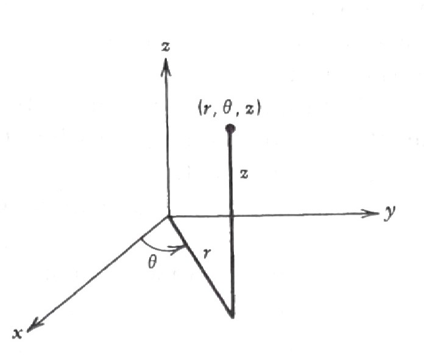
\[\begin{matrix} x = r\cos \theta \\ y = r\sin \theta \, \\ z = z \quad\;\;\; \end{matrix} \;\; \Rightarrow \;\; \begin{matrix} r^2 = x^2 + y^2 \;\;\;\\ \tan\theta = y/x \quad\; \\ z=z \qquad\;\;\;\; \end{matrix}\]
Changing the Laplacian \(\,\nabla^2 u = u_{xx} +u_{yy} +u_{zz}\,\) to cylindrical coordinates, \(\,\)we can show
\[ \color{red}{\nabla^2 u = u_{rr} +\frac{1}{r} u_r +\frac{1}{r^2} u_{\theta\theta} +u_{zz}}\]
Spherical Coordinates
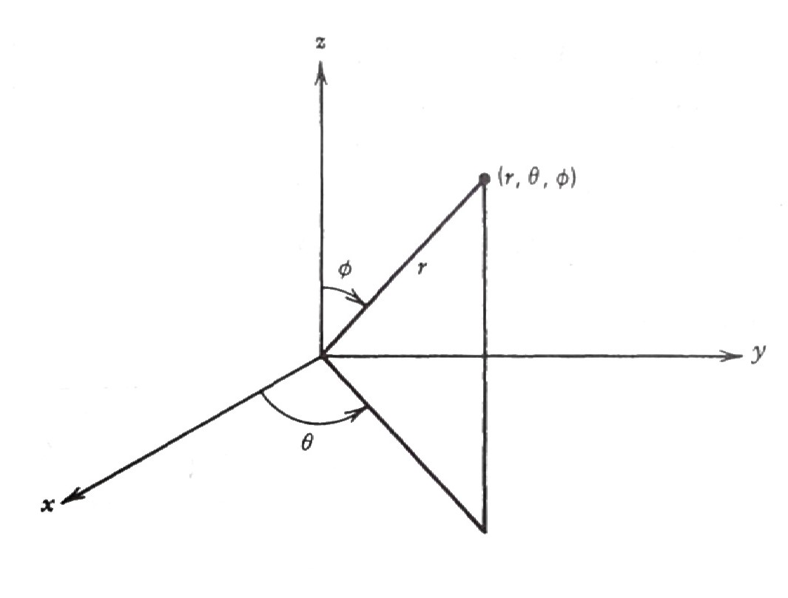
\[\begin{matrix} x = r\sin\phi\cos \theta \\ y = r\sin\phi\sin \theta \, \\ z = r\cos\phi \quad\;\;\; \end{matrix} \;\; \Rightarrow \;\; \begin{matrix} r^2 = x^2 + y^2 +z^2 \;\;\;\\ \cos\phi = z/r \qquad\;\;\;\;\\ \tan\theta=y/x \qquad\;\;\;\; \end{matrix}\]
Finally, \(\,\)if we write the Laplacian in spherical coordinates, \(\,\)we have
\[\scriptsize \begin{aligned} \nabla^2u &= u_{xx} +u_{yy} +u_{zz}\\ &\Updownarrow \\ u_x = u_r r_x +u_\phi \phi_x+u_\theta \theta_x &= u_r \sin\phi\cos\theta +u_\phi \frac{\cos\phi\cos\theta}{r} -u_\theta \frac{\sin\theta}{r\sin\phi}\\ u_y = u_r r_y +u_\phi \phi_y+u_\theta \theta_y &= u_r \sin\phi\sin\theta +u_\phi \frac{\cos\phi\sin\theta}{r} +u_\theta \frac{\cos\theta}{r \sin\phi}\\ u_z = u_r r_z +u_\phi \phi_z+u_\theta \theta_z &= u_r \cos\phi -u_\phi\frac{\sin\phi}{r} \\ &\Downarrow \\ u_{xx} = (u_x)_r r_x +(u_x)_\phi \phi_x+(u_x)_\theta \theta_x &= {\tiny \left( u_{rr} \sin\phi\cos\theta +u_{\phi r} \frac{\cos\phi\cos\theta}{r} -u_\phi\frac{\cos\phi\cos\theta}{r^2} -u_{\theta r} \frac{\sin\theta}{r\sin\phi} +u_\theta\frac{\sin\theta}{r^2\sin\phi} \right) \sin\phi\cos\theta} \\ { \tiny +\left( u_{r\phi}\sin\phi \cos\theta \right. }&{\tiny\, \left. +u_r\cos\phi\cos\theta +u_{\phi\phi} \frac{\cos\phi\cos\theta}{r} -u_{\phi} \frac{\sin\phi\cos\theta}{r} -u_{\theta\phi} \frac{\sin\theta}{r\sin\phi} +u_\theta \frac{\sin\theta\cot\phi}{r\sin\phi} \right)\frac{\cos\phi \cos\theta}{r}} \\ {\tiny -\left( u_{r\theta}\sin\phi\cos\theta \right. }&{\tiny \, \left. -u_r \sin\phi\sin\theta +u_{\phi\theta} \frac{\cos\phi\cos\theta}{r} -u_\phi \frac{\cos\phi\sin\theta}{r} -u_{\theta\theta}\frac{\sin\theta}{r\sin\phi} -u_\theta \frac{\cos\theta}{r\sin\phi} \right) \frac{\sin\theta}{r\sin\phi} }\qquad\qquad \end{aligned}\]
\[\scriptsize \begin{aligned} u_{yy} = (u_y)_r r_y +(u_y)_\phi \phi_y+(u_y)_\theta \theta_y &= {\tiny \left( u_{rr} \sin\phi\sin\theta +u_{\phi r} \frac{\cos\phi\sin\theta}{r} -u_\phi\frac{\cos\phi\sin\theta}{r^2} +u_{\theta r} \frac{\cos\theta}{r\sin\phi} -u_\theta\frac{\cos\theta}{r^2\sin\phi} \right) \sin\phi\sin\theta }\\ {\tiny+\left( u_{r\phi}\sin\phi \sin\theta \right.} &{\tiny\, \left. +u_r\cos\phi\sin\theta +u_{\phi\phi} \frac{\cos\phi\sin\theta}{r} -u_{\phi} \frac{\sin\phi\sin\theta}{r} +u_{\theta\phi} \frac{\cos\theta}{r\sin\phi} -u_\theta \frac{\cos\theta\cot\phi}{r\sin\phi} \right)\frac{\cos\phi \sin\theta}{r}} \\ {\tiny+\left( u_{r\theta}\sin\phi\sin\theta \right.} &{\tiny \, \left.+u_r \sin\phi\cos\theta +u_{\phi\theta} \frac{\cos\phi\sin\theta}{r} +u_\phi \frac{\cos\phi\cos\theta}{r} +u_{\theta\theta}\frac{\cos\theta}{r\sin\phi} -u_\theta \frac{\sin\theta}{r\sin\phi} \right) \frac{\cos\theta}{r\sin\phi} }\\ u_{zz} = (u_z)_r r_z +(u_z)_\phi \phi_z+(u_z)_\theta \theta_z &={\tiny \left( u_{rr}\cos\phi -u_{\phi r}\frac{\sin\phi}{r} +u_\phi\frac{\sin\phi}{r^2} \right) \cos\phi} {\tiny +\left( -u_{r\phi}\cos\phi \right. +}{\tiny\, \left. u_{r}\sin\phi +u_{\phi\phi}\frac{\sin\phi}{r} +u_\phi\frac{\cos\phi}{r} \right) \frac{\sin\phi}{r}}\\ &\Downarrow \\ \color{red}{\nabla^2 u =u_{rr} +\frac{2}{r} u_r }&\color{red}{+\frac{1}{r^2}u_{\phi\phi} +\frac{\cot\phi}{r^2} u_{\phi} +\frac{1}{r^2\sin^2\phi}u_{\theta\theta}} \\ \color{red}{= \frac{1}{r^2}\left( r^2 u_r \right)_r }& \color{red}{+\frac{1}{r^2 \sin\phi} \left( \sin\phi\, u_\phi \right)_\phi +\frac{1}{r^2\sin^2\phi}u_{\theta\theta}} \end{aligned}\]
\(~\)
NOTES
The Laplacian in cartesian coordinates is the only one with constant coefficients. \(\,\)This is one reason why problems in other coordinate systems are harder to solve. \(\,\)It is still possible to use the separation of variables for these equations with variable coefficients; \(\,\)it’s just that some of the resulting ordinary differential equations have variables coefficients
We arrive at a lot of fairly complicated equations, \(\,\)such as Bessel’s equation, \(\,\)Legendre equation, and other so-called classical equations of physics. \(\,\)To solve these equations, \(\,\)we must resort to infinite-series solutions and, \(\,\)in particular, \(\,\)the method of Frobenious
\(~\)
Example \(\,\) What is the wave equation \(\,u_{tt}=c^2\nabla^2 u\,\) in polar coordinates if you know that the solution \(\,u\,\) depends only on \(\,r\,\) and \(\,t\)
\(~\)
Example \(\,\) What is Laplace’s equation in spherical coordinates if the solution \(\,u\,\) depends only on \(\,r\)? \(\,\)Can you find the solutions of this equation? These are the spherically symmetric potentials in three dimensions
\(~\)
13.2 \(~\)General Nature of Boundary-Value Problems
Many important problems whose outcomes do not change with time are described by elliptic boundary-value problems. \(\,\)There are two common situations in physical problems that give rise to PDEs that don’t involve time; \(\,\)they are:
1. \(\;\)Steady-state problems
2. \(\;\)Problems where we factor out the time component in the solution
When studying boundary-value problems (BVPs), \(\,\)there are three types of BCs that are most common; \(\,\)we discuss these three types now
Dirichlet Problems
Here, \(\,\)the PDE holds over a given region of space, \(\,\)and the solution is specified on the boundary of the region. \(\,\)An example would be to find the steady-state temperature inside a circle with the temperature given on the boundary
\[ u_{rr} +\frac{1}{r}u_r + \frac{1}{r^2} u_{\theta\theta}=0, \] \[\;\; u(1,\theta) = \sin\theta, \;\;\;0 < r < 1,\;\;\; 0 \leq \theta < 2\pi\]
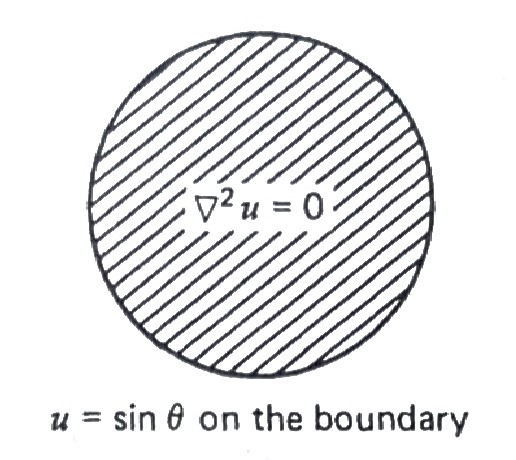
Another example would be an exterior Dirichlet problem in which we are looking for the solution of Laplace’s equation outside the unit circle, \(\,\)and the boudary condition is given on the circle
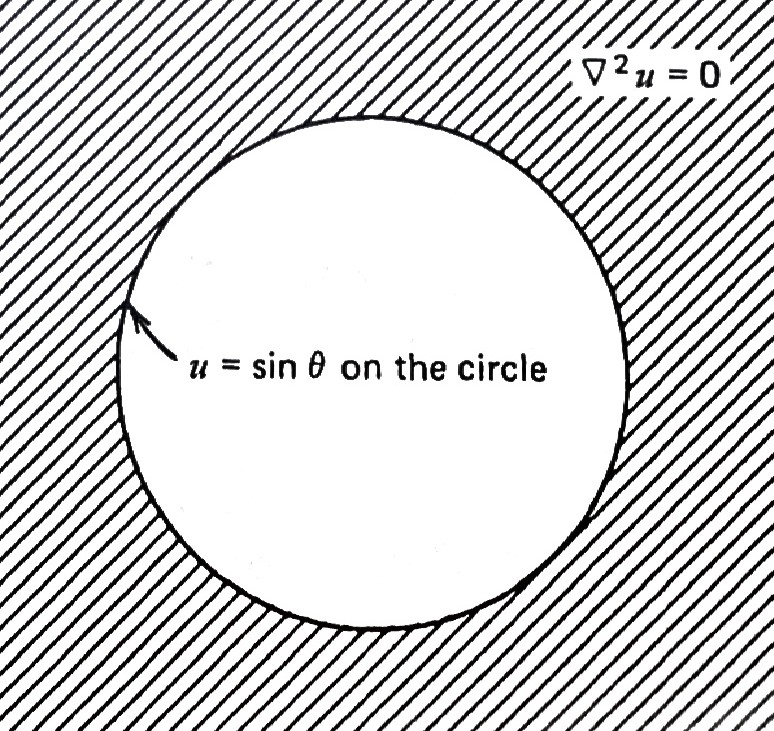
Neumann Problems
Here, \(\,\)the PDE holds in some region of space, \(\,\)but now the outward normal derivative
\[\frac{\partial u}{\partial n}\]
(which is proportional to the inward flux) is specified on the boundary. \(\,\)For example, \(\,\)suppose the inward flow of heat varies around the circle according to
\[ \frac{\partial u}{\partial r}=\sin\theta\]
The steady-state temperature inside the circle would then be given by the solution of the BVP
\[ \nabla^2 u = 0, \quad 0 < r < 1\]
\[ \frac{\partial u}{\partial r} =\sin\theta, \quad r=1, \;\; 0 \leq \theta < 2\pi\]
Here, \(\,\)we can see that the flux of heat across the boundary is inward for \(\,0 \leq \theta \leq \pi\,\) and outward for \(\,\pi \leq \theta < 2\pi\)
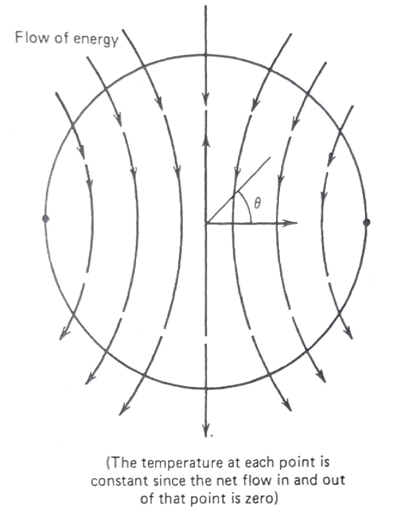
However, \(\,\)since the total flux
\[ \int_0^{2\pi} \frac{\partial u}{\partial r}\, d\theta\;=\int_0^{2\pi} \sin\theta \,d\theta = 0\]
(a condition that must be true for Neumann problems), \(\,\)we can say that the temperature at each point inside circle does not change with respect to time. \(\,\)In other words, \(\,\)Neumann problems make sense only if the net gain in heat across the boundary is zero
The Neumann problem is somewhat different from other boundary conditions, \(\,\)in that solutions are not unique. \(\,\)In other words, \(\,\)the above Neumann problem has an infinite number of solutions \(\,u(r,\theta)\). \(\,\)Once we have one solution, \(\,\)we can get the others just by adding a constant. \(\,\)For example, \(\,\)one solution to our Neumann problem is
\[ u(r,\theta)=r\sin\theta\]
and it is obvious that if we add a constant to this solution, \(\,\)another one is obtained. \(\,\)For this reason, \(\,\)if we want to find one solution to the Neumann problem, \(\,\)we must have some additional information (like knowing the solution at one point)
Robin Problems
These problems correspond to the PDEs being given in some region of space, \(\,\)but now the condition on the boundary is a mixture of the first two kinds
\[ \frac{\partial u}{\partial n} = -h(u -g)\]
where \(\,h\,\) is a constant and \(\,g\,\) is a given function that can vary over the boundary. \(\,\)This BC says the inward flux across the boundary is proportional to the difference between the boundary value of \(\,u\,\) and specified environment value \(\,g\,\)
In heat transfer, \(\,\)this, \(\,\)of course, \(\,\)is just Newton’s law of cooling. \(\,\)The constant \(\,h\,\) is a physical parameter that measures the amount of flux across the boundary per difference between \(\,u\,\) and \(\,g\). \(\,\)If \(\,h\,\) is large, \(\,\)and so the solution looks very much like the solution of the Dirichlet problem \(\,u=g\). \(\,\)On the order hand, \(\,\)if \(\,h=0\), then the BC is reduced to the insulated BC
\[ \color{blue}{\frac{\partial u}{\partial r}=0} \]
\(~\)
Example \(\,\) Does the following Neumann have a solution inside the circle?
\[ \nabla^2 u = 0, \quad 0 < r < 1\]
\[ \frac{\partial u}{\partial r} =\sin^2\theta, \quad r=1, \;\; 0 \leq \theta < 2\pi\]
\(~\)
Example \(\,\) For different values of \(h\), \(~\)imagine the solution \(u(r,\theta)\,\) to
\[ \nabla^2 u = 0, \quad 0 < r < 1\]
\[ \frac{\partial u}{\partial r} +h(u -\sin\theta)=0, \quad r=1, \;\; 0 \leq \theta < 2\pi\]
\(~\)
13.3 Interior Dirichlet Problem for a Circle
This section presents a number of new ideas to solve the interior Dirichlet problem for the circle
\[ \color{red}{u_{rr} +\frac{1}{r}u_r + \frac{1}{r^2} u_{\theta\theta}=0, \;\;\;0 < r < 1}\]
\[ \color{red}{u(1,\theta) = g(\theta), \;\;\; 0 \leq \theta < 2\pi}\]
The method of separation of variables will be the usual procedure
\[\scriptsize\begin{aligned} u_{rr} +\frac{1}{r}u_r &+\frac{1}{r^2}u_{\theta\theta}= 0 \\ u(1,\theta) &= g(\theta) \\ &\Downarrow u(r,\theta)=R(r)\Theta(\theta)\\ \end{aligned}\]
\[\scriptsize\begin{aligned} -\frac{r^2R'' +rR'}{R} &= \frac{\;\Theta''}{\Theta} =-\lambda \leq 0 \\ &\Downarrow \\ \Theta'' +\lambda \Theta =0 \;\; \xrightarrow[] {\;\;\Theta(0)=\Theta(2\pi),\;\Theta'(0) =\Theta'(2\pi)\;\;} &\;\;\Theta_n(\theta)=a_n \cos n\theta +b_n \sin n\theta, \;\; \lambda_n =n^2, \;\; n=0,1,2,\cdots \\ &\Downarrow \\ r^2R_0'' +rR_0'=0\; &\xrightarrow[]{\;\;| R_0(0)| \,<\,\infty \;\;} \;\; R_0(r)=1 \\ r^2R_n''+rR_n' -n^2 R_n=0,\;\;n =1,2,\cdots\; &\xrightarrow[]{\;\; | R_n(0) | \,<\,\infty \;\;} \;\;R_n(r)= r^n \\ &\Downarrow \\ \color{red}{u(r,\theta) =\frac{a_0}{2} +\sum_{n=1}^\infty } &\color{red}{ r^n \left( a_n \cos n\theta +b_n \sin n\theta \right)} \\ a_n = \frac{1}{\pi} \int_0^{2\pi} &g(\theta) \cos n\theta \,d\theta \\ b_n = \frac{1}{\pi} \int_0^{2\pi} &g(\theta) \sin n\theta \,d\theta \end{aligned}\]
The solution can be interpreted as expanding the boundary function \(\,g(\theta)\,\) as a Fourier series
\[ g(\theta)=\frac{a_0}{2} +\sum_{n=1}^\infty \left(a_n \cos n\theta +b_n \sin n\theta \right)\]
and solve the problem for \(\,\cos n\theta\,\) and \(\,\sin n\theta\,\) in the series. \(\,\)Since each of these terms will give rise to solutions \(\,r^n\cos n\theta\,\) and \(\,r^n \sin n\theta\), \(\,\)we can then say (by superposition) that
\[ u(r,\theta)=\frac{a_0}{2} +\sum_{n=1}^\infty {\color{red}{r^n}} \left(a_n \cos n\theta +b_n \sin n\theta \right)\]
Note that the constant term \(\,\displaystyle\frac{a_0}{2}\,\) in the solution represents the average of \(\,g(\theta)\)
\[ \frac{a_0}{2} = \frac{1}{2\pi} \int_0^{2\pi} g(\theta)\,d\theta\]
If the radius of the circle was arbitrary (say \(R\)), \(\,\)then the solution would be
\[ u(r,\theta)=\frac{a_0}{2} +\sum_{n=1}^\infty \left(\frac{r}{R}\right)^n \left(a_n \cos n\theta +b_n \sin n\theta \right)\]
This completes our discussion of the separation of variables solution. \(\,\)We now go to the interesting Poisson integral formula
\(~\)
Example \(\,\)The solution of
\[ \quad\;\;\;\nabla^2 u = 0, \quad 0 < r < 1\]
\[\begin{aligned} u(1, \theta)&=1 + \sin\theta +\frac{1}{2}\sin3\theta +\cos 4\theta \\ \end{aligned}\]
would be
\[\begin{aligned} u(r, \theta)&=1 + r\sin\theta +\frac{r^3}{2}\sin3\theta +r^4\cos 4\theta \\ \end{aligned}\]
\(~\)
Poisson Integral Formula
We start with the separation of varaiables solution
\[ u(r,\theta) =\frac{a_0}{2} +\sum_{n=1}^\infty \left(\frac{r}{R}\right)^n \left(a_n \cos n\theta +b_n \sin n\theta \right)\]
and substitute the coefficients \(\,a_n\,\) and \(\,b_n\). \(\,\)After a few manipulations, \(\,\)we have
\[\scriptsize\begin{aligned} u(r,\theta) &= \frac{1}{2\pi} \int_0^{2\pi} g(\alpha)\,d\alpha +\frac{1}{\pi} \sum_{n=1}^\infty \left(\frac{r}{R} \right)^n \int_0^{2\pi} g(\alpha) \left( \cos n\alpha\cos n\theta +\sin n\alpha \sin n\theta \right)\,d\alpha \\ &= \frac{1}{2\pi} \int_0^{2\pi} \left\{ 1 +2\sum_{n=1}^\infty \left(\frac{r}{R} \right)^n \cos n(\theta -\alpha) \right\} \,g(\alpha)\,d\alpha \\ \end{aligned}\]
\[\scriptsize\begin{aligned} &= \frac{1}{2\pi} \int_0^{2\pi} \left\{ 1 +\sum_{n=1}^\infty \left(\frac{r}{R} \right)^n \left[e^{in(\theta -\alpha)} +e^{-in(\theta -\alpha)} \right] \right\}\,g(\alpha)\,d\alpha \\ &= \frac{1}{2\pi} \int_0^{2\pi} \left\{ 1 +\frac{re^{i(\theta -\alpha)}}{R -re^{i(\theta -\alpha)}} +\frac{re^{-i(\theta -\alpha)}}{R -re^{-i(\theta -\alpha)}} \right\}\,g(\alpha)\,d\alpha \\ &= \color{red}{\frac{1}{2\pi} \int_0^{2\pi} \left\{ \frac{R^2 -r^2}{R^2 +r^2 -2rR\cos(\theta -\alpha)} \right\}\,g(\alpha)\,d\alpha} \end{aligned}\]
This last equation is what we were looking for; \(\,\)it’s the Poisson Integral Formula
We can interpret the Poisson integral solution as finding the potential \(\,u\,\) at \(\,(r,\theta)\,\) as a weighted average of the boundary potentials \(\,g(\theta)\,\) weighted by the Poisson kernel
\[\text{Poisson kernel}=\frac{R^2 -r^2}{R^2 +r^2 -2rR\cos(\theta -\alpha)}\]
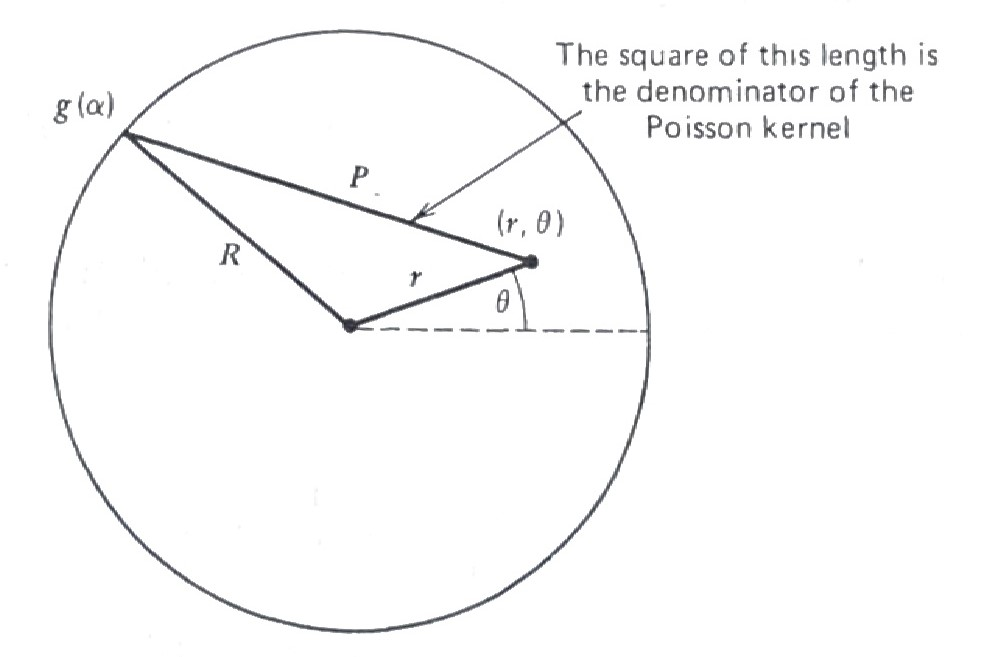
For boundary values \(\,g(\alpha)\,\) close to \(\,(r,\theta)\,\), \(\,\)the Poisson kernel gets larger, \(\,\)since the denominator of the Poisson kernel is the square of the distance from \(\,(r,\theta)\,\) to \(\,(R,\alpha)\)
If we evaluate the potential at the center of the circle by the Poisson integral, \(\,\)we find
\[ u(0,0) = \frac{1}{2\pi} \int_0^{2\pi} g(\theta) \,d\theta\]
In other words, \(\,\)the potential at the center of the circle is the average of the boundary potential
\(~\)
13.4 The Dirichlet Problem in an Annulus and in an Exterior
The Dirichlet problem between two circles (annulus) is
\[ \color{red}{u_{rr} +\frac{1}{r}u_r + \frac{1}{r^2} u_{\theta\theta}=0, \;\;R_1 < r < R_2}\] \[\;\; \color{red}{\begin{aligned} u(R_1,\theta) &= g_1(\theta) \\ u(R_2,\theta) &= g_2(\theta) \end{aligned}, \;\;\; 0 \leq \theta < 2\pi}\]
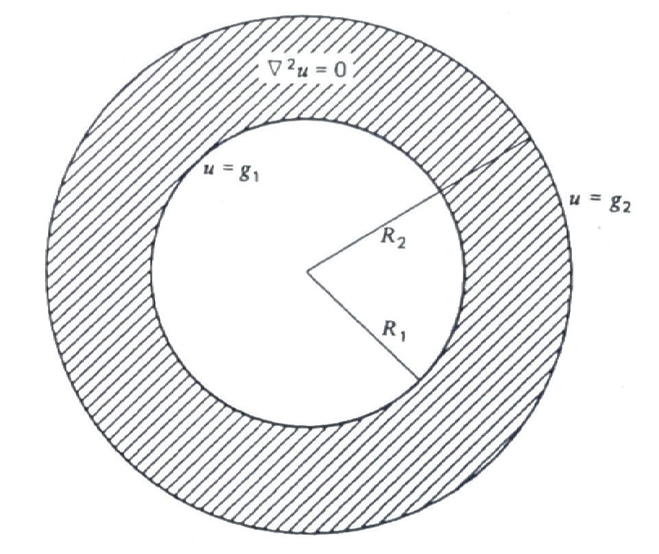
We begin by looking for solutions of the form
\[ u(r,\theta)=R(r)\Theta(\theta)\]
Substituting this into Laplace’s equation, \(\,\)we get the two following ODEs in \(\,R(r)\,\) and \(\,\Theta(\theta)\):
\[\begin{aligned} &r^2 R'' +rR' -\lambda R = 0 \quad (\text{Euler's equation}) \\ &\Theta'' +\lambda \Theta = 0 \end{aligned}\]
Note that in the two equations, \(\,\)we required the separation constant \(\,\lambda\,\) to be greater than, \(\,\)or equal to zero, \(\,\)or else the solution for \(\,\Theta(\theta)\,\) would not be periodic
Solving these two ODEs, \(\,\)we now have
\[\begin{aligned} \lambda = 0 \;\; &\begin{cases} \Theta(\theta)= \alpha + \beta\theta \\ R(r) = \gamma + \delta\ln r \end{cases} \\ \lambda > 0 \;\; &\begin{cases} \Theta(\theta)= a\cos\sqrt{\lambda}\theta +b\sin \sqrt{\lambda}\theta\\ R(r) = cr^{\sqrt{\lambda}} +dr^{-\sqrt{\lambda}} \end{cases} \end{aligned}\]
and using the requirement that \(\,\Theta(\theta)\,\) must be periodic with period \(\,2\pi\), \(\,\)we have that \(\,\beta=0 \,\text{ at }\, \lambda=0\,\) and \(\,\lambda (>0)\,\) must be \(\,n^2\), \(\,n= 0,1,2,\cdots\)
Hence, \(\,\)we arrive at the following solutions to Laplace’s equation
\[\begin{aligned} &1 \;\;\;(\text{constants}) \\ &\ln r \\ &r^n \cos n\theta \\ &r^n \sin n\theta \\ &r^{-n} \cos n\theta \\ &r^{-n} \sin n\theta \end{aligned}\]
Since any sum of these solutions is also a solution, \(\,\)we arrive at our general solution
\[ \color{red}{u(r,\theta) = \frac{a_0}{2} +\frac{\tilde{a_0}}{2} \ln r +\sum_{n=1}^\infty \left[ \left(a_n r^n +\tilde{a_n} r^{-n}\right) \cos n\theta + \left(b_n r^n +\tilde{b_n} r^{-n}\right) \sin n\theta \right]}\]
The only task left is to determine the constants in the sum so that \(\,u(r,\theta)\,\) satisfies the BCs
\[ \begin{aligned} u(R_1,\theta) &= g_1(\theta) \\ u(R_2,\theta) &= g_2(\theta) \end{aligned}, \;\;\; 0 \leq \theta < 2\pi\]
Substituting the general solution into these BCs and integrating gives the following equations
\[\scriptsize\begin{aligned} &\begin{cases} a_0 +\tilde{a_0} \ln R_1 =\displaystyle \frac{1}{\pi} \int_0^{2\pi} g_1(\alpha)\,d\alpha \\ a_0 +\tilde{a_0} \ln R_2 =\displaystyle \frac{1}{\pi} \int_0^{2\pi} g_2(\alpha)\,d\alpha \end{cases} &&\text{Solve for } a_0, \tilde{a_0} \\ &\begin{cases} a_n R_1^n +\tilde{a_n} R_1^{-n} =\displaystyle \frac{1}{\pi} \int_0^{2\pi} g_1(\alpha) \cos n\alpha \,d\alpha \\ a_n R_2^n +\tilde{a_n} R_2^{-n} =\displaystyle \frac{1}{\pi} \int_0^{2\pi} g_2(\alpha) \cos n\alpha \,d\alpha \end{cases} &&\text{Solve for } a_n, \tilde{a_n} \\ &\begin{cases} b_n R_1^n +\tilde{b_n} R_1^{-n} =\displaystyle \frac{1}{\pi} \int_0^{2\pi} g_1(\alpha) \sin n\alpha \,d\alpha \\ b_n R_2^n +\tilde{b_n} R_2^{-n} =\displaystyle \frac{1}{\pi} \int_0^{2\pi} g_2(\alpha) \sin n\alpha \,d\alpha \end{cases} &&\text{Solve for } b_n, \tilde{b_n} \end{aligned}\]
\(~\)
Example \(\,\) Suppose the potential on the inside circle is zero, \(\,\)while the outside potential is \(\,\sin \theta\)
\[ u_{rr} +\frac{1}{r}u_r + \frac{1}{r^2} u_{\theta\theta}=0, \;\;\;1 < r < 2\]
\[ \begin{aligned} u(1,\theta) &= 0 \\ u(2,\theta) &= \sin\theta \end{aligned}, \;\;\; 0 \leq \theta < 2\pi\]
Solving the necessary equations for \(\,a_0, \tilde{a_0}\), \(a_n, \tilde{a_n}\), \(b_n\), and \(\tilde{b_n}\,\) yields
\[ u(r,\theta)=\frac{2}{3} \left(r -\frac{1}{r} \right) \sin \theta\]
\(~\)
Example \(\,\) Consider the problem with constant potentials on the boundaries
\[ u_{rr} +\frac{1}{r}u_r + \frac{1}{r^2} u_{\theta\theta}=0, \;\;\;1 < r < 2 \]
\[ \begin{aligned} u(1,\theta) &= 3 \\ u(2,\theta) &= 5 \end{aligned}, \;\;\; 0 \leq \theta < 2\pi \]
In this case, \(\,\)since it’s obvious that the solution is independent of \(\,\theta\), \(\,\)we know our solution must be of the form \(\,a_0 +\tilde{a_0} \ln r\). \(\,\)Using our two equations for \(\,a_0\,\) and \(\,\tilde{a_0}\), \(\,\)we obtain
\[ u(r,\theta)=3 +\frac{2}{\ln 2} \ln r\]
The only solutions of the two dimensional Laplace equation that depend only on \(\,r\,\) are constant and \(\,\ln r\). \(\,\)The potential \(\,\ln r\,\) is very important and is called the logarithmic potential
\(~\)
Example \(\,\) Another interesting problem is
\[ u_{rr} +\frac{1}{r}u_r + \frac{1}{r^2} u_{\theta\theta}=0, \;\;\;1 < r < 2\]
\[ \begin{aligned} u(1,\theta) &= \sin\theta \\ u(2,\theta) &= \sin\theta \end{aligned}, \;\;\; 0 \leq \theta < 2\pi\]
A quick check of the coefficients reveals that they are all zero except for \(\,b_1\,\) and \(\,\tilde{b}_1\). \(\,\)Solving for \(\,b_1\,\) and \(\,\tilde{b_1}\,\) gives the solution
\[ u(r,\theta)=\left(\frac{r}{3} +\frac{2}{3r}\right) \sin\theta\]
\(~\)
Exterior Dirichlet Problem
The exterior Dirichlet problem
\[ u_{rr} +\frac{1}{r}u_r + \frac{1}{r^2} u_{\theta\theta}=0, \;\;\;\color{red}{R_1 < r < \infty}\]
\[ u(R_1,\theta)=g(\theta), \;\;\; 0 \leq \theta < 2\pi\]
is solved exactly like the interior Dirichlet problem except that now we throw out the solutions that are unbounded as \(\,r\,\) goes to infinity
Hence, \(\,\)we left with the solution
\[ \color{red}{u(r,\theta)= \frac{a_0}{2} +\sum_{n=1}^{\infty} \left(\frac{r}{R_1}\right)^{-n}\left( \tilde{a_n} \cos n\theta +\tilde{b_n} \sin n \theta \right)}\]
where \(\,a_0\), \(\,\tilde{a_n}\,\) and \(\,\tilde{b_n}\,\) are exactly as Fourier series. \(\,\)In other words, \(\,\)we merely expand \(\,u(R_1,\theta)=g(\theta)\,\) as a Fourier series
\[ g(\theta)=\frac{a_0}{2} +\sum_{n=1}^\infty \left( \tilde{a_n} \cos n\theta +\tilde{b_n} \sin n\theta \right)\]
and then insert the factor \(\,\displaystyle\left(\frac{r}{R_1}\right)^{-n}\,\) in each term to get the solution
\(~\)
Example \(\,\) The exterior problem
\[ u_{rr} +\frac{1}{r}u_r + \frac{1}{r^2} u_{\theta\theta}=0, \;\;\;1 < r < \infty\]
\[ u(1,\theta)=1 +\sin\theta +\cos 3\theta, \;\;\; 0 \leq \theta < 2\pi\]
has the solution
\[ u(r,\theta)=1 +\frac{1}{r}\sin\theta +\frac{1}{r^3}\cos 3\theta, \;\;\; 0 \leq \theta < 2\pi\]
\(~\)
Example \(\,\) The exterior Neumann problem
\[ u_{rr} +\frac{1}{r}u_r + \frac{1}{r^2} u_{\theta\theta}=0, \;\;\;1 < r < \infty\]
\[ \frac{\partial u}{\partial r}(1,\theta)=g(\theta), \;\;\; 0 \leq \theta < 2\pi\]
has a solution that is the same form as the Dirichlet problem
\[ u(r,\theta)= \frac{a_0}{2} +\sum_{n=1}^{\infty} r^{-n}\left( \tilde{a_n} \cos n\theta +\tilde{b_n} \sin n \theta \right)\]
but now the coefficients \(\,a_0\), \(\,\tilde{a_n}\) and \(\,\tilde{b_n}\,\) must satisfy the new BC. Of course, once you have this solution, \(\,\)any constant plus this solution is also a solution
\(~\)
13.5 Laplace’s Equation in Spherical Coordinates (Spherical Harmonics)
An important problem in physics is to find the potential inside or outside a sphere when the potential is given on the boundary
For the interior problem, \(\,\)we must find the solution \(\,u(r,\phi,\theta)\,\) that satisfies
\[ \left( r^2 u_r \right)_r +\frac{1}{\sin\phi} \left( \sin\phi\, u_\phi \right)_\phi +\frac{1}{\sin^2\phi} u_{\theta\theta} = 0 \]
\[ u(1,\phi,\theta)=g(\phi,\theta), \;0\leq \theta <2\pi,\;0 \leq \phi < \pi \]
Note that this spherical Laplacian is written in a different form than those we’ve seen before. \(\,\)This form is slightly more compact and easier to use
Quite often \(\,g(\phi,\theta)\,\) has a specific form, \(\,\)so that it isn’t necessary to solve the problem in its most general form. \(\,\)Two important special cases are considered in this Lesson. \(\,\)One is the case when \(\,g(\phi,\theta)\,\) is constant, \(\,\)and the other is when it depends only on the angle \(\,\phi\,\) (the angle from the north pole)
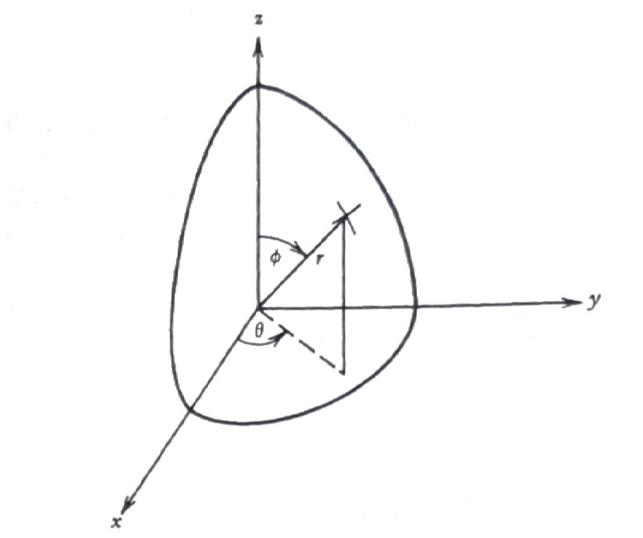
Special Case 1 \(\,\) \(-\;\;\color{red}{g(\phi,\theta) = \text{constant}}\)
In this case, \(\,\)it is clear that the solution is independent of \(\,\phi\,\) and \(\,\theta\), \(\,\)and so Laplace’s equation reduces to the ODE
\[ \left( r^2 u_r \right)_r = 0 \]
This is a simple ODE that the student can easily solve; \(\,\)the general solution is
\[ u(r)=\frac{a}{r} +b \]
In other words, \(\,\)constant and \(\,\displaystyle\frac{a}{r}\,\) are the only potential that depend only on the radial distance from the origin. \(\,\)The potential \(\,\displaystyle\frac{1}{r}\,\) is very important in physics and is called the Newtonian potential
\(~\)
Example \(\,\) (Potential interior to a sphere)
\[ \nabla^2 u = 0, \;\;\; 0 < r < 1 \]
\[ u(1,\phi,\theta) = 3 \]
Here solution must be \(\,u(r,\phi,\theta) = 3\,\) in order to be bounded
\(~\)
Example \(\,\) (Potential between two spheres each at constant potential)
Suppose we want to find the steady-state temperature between two spheres held at different temperatures
\[ \nabla^2 u = 0, \;\;\; R_1 < r < R_2 \]
\[\begin{aligned} u(R_1,\phi,\theta) &= A \\ u(R_2,\phi,\theta) &= B \end{aligned}\]
Since we know the potential has the general solution
\[ u(r)=\frac{a}{r} +b \]
we substitute it in the BCs and solve for \(\,a\,\) and \(\,b\,\); \(\,\)doing this gives
\[ u(r)= (A -B) \frac{R_1 R_2}{R_2 -R_1} \frac{1}{r} + \frac{R_2 B -R_1 A}{R_2 -R_1} \]
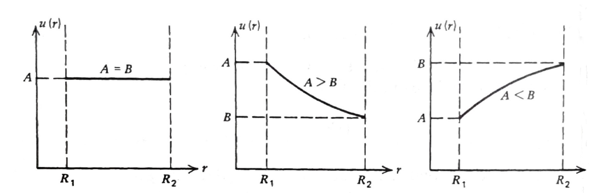
\(~\)
Special Case 2 \(\,\) \(-\;\;\color{red}{g(\phi,\theta) \text{ depends only on } \phi}\)
Here, the Dirichlet problem takes the form
\[ \left( r^2 u_r \right)_r +\frac{1}{\sin\phi} \left( \sin\phi\, u_\phi \right)_\phi = 0, \;\;\; 0 < r < 1 \]
\[ u(1,\phi)=g(\phi),\;\;\; 0 \leq \phi \leq \pi \]
Using separation of variables, \(\,\)we look for solutions of the form
\[ u(r,\phi)=R(r)\Phi(\phi) \]
and arrive at the two ODEs
\[ \begin{aligned} &\left(\sin\phi\, \Phi' \right)' +\lambda \sin\phi \Phi= 0 &&\text{Legendre's equation}\\ &r^2R'' +2rR' -\lambda R = 0 && \text{Euler's equation} \end{aligned} \]
Legendre’s equation isn’t easy; \(\,\)the general strategy in solving this equation is to make the substitution
\[x=\cos\phi\]
Making this change of variable gives rise to the new Legendre’s equation
\[\scriptsize \begin{aligned} \left(\sin\phi\, \Phi' \right)' &+\lambda \sin\phi \Phi= 0\\ &\Downarrow \;\; x=\cos\phi, \;\; \Phi'=\frac{d\Phi}{dx} \frac{dx}{d\phi} =-\sin\phi\frac{d\Phi}{dx} \\ \left(\sin\phi\, \Phi' \right)' &=-\frac{d}{dx} \left(\sin^2\phi \frac{d\Phi}{dx} \right) \frac{dx}{d\phi} =\left(\sin^2\phi \frac{d^2\Phi}{dx^2} +2\sin\phi\cos\phi \frac{d\phi}{dx}\frac{d\Phi}{dx} \right)\sin\phi \\ &=\left[ (1 -x^2) \frac{d^2\Phi}{dx^2} -2x\frac{d\Phi}{dx} \right] \sin\phi \\ &\Downarrow \\ \color{red}{(1 -x^2) \frac{d^2\Phi}{dx^2}} &\color{red}{-2x\frac{d\Phi}{dx} +\lambda \Phi = 0, \;\;\; -1 \leq x \leq 1} \\ &\Downarrow \\ \frac{d}{dx} \left[ (1 -x^2) \frac{d\Phi}{dx} \right] &+\lambda \Phi = 0 \end{aligned}\]
One of the difficulties in this equation is that
the coefficient \(\,(1-x^2)\) of \(\displaystyle \,\frac{d^2\Phi}{dx^2}\) is zero at the ends of the domain \(-1 \leq x \leq 1\)
Equations like this are called singular differential equations. \(\,\)We arrive at a very interesting conclusion
The only bounded solutions of Legendre’s equation occur when \(\,\lambda=n(n +1)\), \(\,n=0,1,2,\cdots\,\) and these solutions are Legendre polynomials \(\,P_n(x)\)
\[\begin{aligned} &P_0(x) = 1 \\ &P_1(x) = x \\ &P_2(x) = \frac{1}{2}(3x^2 -1) \\ &P_3(x) = \frac{1}{2}(5x^3 -3x) \\ &\qquad \vdots \\ &P_n(x) = \frac{1}{2^n n!} \frac{d^n}{dx^n} \left[ (x^2 -1)^n \right] \end{aligned}\]
The graphs of a few Legendre polynomials are shown in
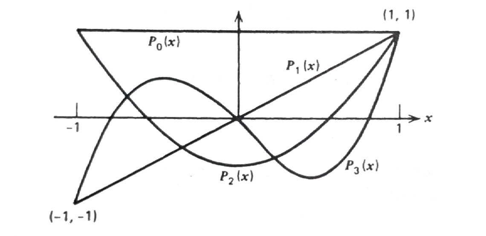
We now solve Euler’s equation by substituting \(\,\lambda = n(n+1)\,\) and \(\,R(r)=r^\alpha\,\) in the equation and solving for \(\,\alpha\). \(\,\)Doing this, \(\,\)we get two values
\[\alpha = \begin{cases} \phantom{-(n \,} n \\ -(n +1) \end{cases}\]
and, \(\,\)hence, \(\,\)Euler’s equation has the general solution
\[R_n(r)= a_n r^n + b_n r^{-(n +1)} \;\;\xrightarrow[]{\text{ bounded solution }}\;\;a_n r^n\]
The final step is to form the sum
\[ \color{red}{u(r,\phi) = \sum_{n=0}^\infty a_n r^n P_n(\cos\phi)}\;\;\;\]
in such a way that it agrees with the BC \(\,u(1,\phi)=g(\phi)\). \(\,\)Substituting the above solution into the BC gives
\[ g(\phi) = \sum_{n=0}^\infty a_n P_n(\cos\phi)\]
If we multiply each side of this equation by \(\,P_m(\cos\phi)\sin\phi\,\) and integrate \(\,\phi\,\) from \(\,0\,\) to \(\,\pi\), \(\,\)we get
\[\begin{aligned} \int_0^\pi g(\phi) P_m(\cos\phi)\,\sin\phi \,d\phi &= \sum_{n=0}^\infty a_n \int_0^{\pi} P_n(\cos\phi) P_m(\cos\phi)\,\sin\phi \, d\phi \\ &= \sum_{n=0}^\infty a_n \int_{-1}^1 P_n(x) P_m(x) \,dx \\ &= \begin{cases} \quad\: 0 & n \neq m \\ \displaystyle \frac{2}{2m +1}\, a_m & n = m \end{cases} \\ &\Downarrow \\ a_n &=\frac{2n +1}{2} \int_0^{\pi} g(\phi) P_n(\cos\phi)\, \sin \phi \,d\phi \end{aligned}\]
\(~\)
Example \(\,\) Suppose the temperature on the surface of the sphere is given by
\[ g(\phi) = 1 -\cos 2\phi, \quad 0 \leq \phi \leq \pi \]
and suppose we would like to find the temperature inside the sphere. \(\,\)In this problem, \(\,\)the temperature is constant on circles of constant latitude. \(\,\)To find \(\,u\), \(\,\)we must solve
\[ \left( r^2 u_r \right)_r +\frac{1}{\sin\phi} \left( \sin\phi\, u_\phi \right)_\phi = 0, \;\;\; 0 < r < 1 \]
\[u(1,\phi)=1 -\cos 2\phi,\;\;\; 0 \leq \phi \leq \pi \]
Our goal now is to expand \(\,g(\phi)\,\) as a series of Legendre polynomials;
\[\begin{aligned} 1 -\cos 2\phi &= 1 - \left( 2\cos^2\phi -1 \right) \\ &= \frac{4}{3} - \frac{4}{3}\left[ \frac{1}{2} (3\cos^2\phi -1) \right] \\ &= \frac{4}{3} P_0(\cos\phi) -\frac{4}{3}P_2(\cos\phi)\\ &\Downarrow \\ a_0 = \frac{4}{3},\;\; a_2&=-\frac{4}{3},\;\;a_1=a_3=a_4=a_5=\cdots =0 \end{aligned}\]
Hence, \(\,\)the solution to the problem is
\[\begin{aligned} u(r,\phi) &= \frac{4}{3} P_0(\cos\phi) -\frac{4}{3} r^2 P_2(\cos\phi) = \frac{4}{3} - \frac{2}{3} r^2 (3\cos^2\phi -1) \end{aligned}\]
\(~\)
NOTE \(\,\) The solution of the exterior Dirichlet problem
\[\;\;\displaystyle \left( r^2 u_r \right)_r +\frac{1}{\sin\phi} \left( \sin\phi\, u_\phi \right)_\phi = 0, \;\; 1 < r < \infty, \;\;u(1,\phi)=g(\phi),\;\;\; 0 \leq \phi \leq \pi \]
is
\[ u(r,\phi)=\sum_{n=0}^\infty \frac{b_n}{r^{n+1}} P_n(\cos\phi)\]
where \(\;\displaystyle b_n = \frac{2n +1}{2} \int_0^\pi g(\phi) P_n(\cos\phi)\, \sin\phi \, d\phi\)
For example, \(\,\)the BC \(\,g(\phi)=3\,\) would yield the solution \(\,u(r,\theta)=3/r\). \(\,\)Note that in this problem, \(\,\)the solution goes to zero, \(\,\)while in two dimensions, \(\,\)the exterior solution with constant BC was itself a constant
\(~\)
General Case \(\,\) \(-\;\;\color{red}{g(\phi,\theta)}\)
We consider the boundary value problem
\[\color{red}{\begin{aligned} u_{rr} +\frac{2}{r} u_r &+\frac{1}{r^2}u_{\phi\phi} +\frac{\cot\phi}{r^2} u_{\phi} +\frac{1}{r^2\sin^2\phi}u_{\theta\theta} = 0, \;\; r < R \\ u(R,\phi,\theta) &= g(\phi,\theta)\\ \end{aligned}}\]
in a sphere of radius \(\,R\)
1. \(~\) Solve this problem by separation of variables,
2. \(~\) Derive \(\,K(r,\phi,\theta; R,\varphi,\vartheta)\,\) in the equivalent integral formula:\[ u(r,\phi,\theta) = \int_0^{2\pi} \int_0^\pi K(r,\phi,\theta; R,\varphi,\vartheta)\, g(\varphi,\vartheta) \sin\varphi \,d\varphi \, d\vartheta\]
1. \(\,\)Applying separation of variables, \(\,\)we find that the equation has the solution of the form \(\,R(r) \,\Phi(\phi) \,\Theta(\theta)\), \(\,\)provided
\[ -r^2 \sin^2\phi \, \frac{R'' +\frac{2}{r}R'}{R} -\sin\phi\frac{(\sin\phi\, \Phi')'}{\Phi} = \frac{\;\Theta''}{\Theta}= -\mu < 0\]
Since \(\Theta\) must be periodic of period \(\,2\pi\), \(\,\)we have \(\,\color{blue}{\Theta=\cos m\theta}\,\) or \(\,\color{blue}{\sin m\theta}\), \(\,\)where \(\,\color{blue}{\mu = m^2, \; m = 0, 1, 2,\cdots}\). \(\,\)Then
\[\begin{aligned} -\frac{r^2 R'' +2rR'}{R} = \frac{(\sin\phi\, \Phi')'}{\sin\phi\,\Phi} &-\frac{m^2}{\sin^2\phi} = -\lambda < 0 \\ &\Downarrow \\ \color{blue}{(\sin\phi\, \Phi')' +\left(\lambda \sin\phi \, {\color{red}{-\frac{m^2}{\sin\phi}}} \right) \Phi } \;& {\color{blue}{= 0}}\\ \color{blue}{r^2 R'' +2r R' -\lambda R} \;&\color{blue}{= 0} \end{aligned}\]
The equation for \(\,\Phi(\phi)\,\) is singular at its two endpoints \(\,\phi=0\,\) and \(\,\phi=\pi\). \(\,\)In lieu of boundary conditions, \(\,\)we impose the condition that \(\,\Phi\,\) and \(\,\Phi'\,\) remain bounded at both ends. \(\,\)This gives an eigenvalue problem with two singular endpoints. \(\,\)We introduce the new variable \(\,x=\cos\phi\,\) and let \(\,\Phi(\phi)=P(\cos\phi)\). \(\,\)Then the equation for \(\,\Phi(\phi)\,\) becomes
\[\color{red}{\frac{d}{dx} \left[\left(1 -x^2\right) \frac{dP}{dx} \right] +\left[\lambda -\frac{m^2}{1 -x^2 } \right] P = 0} \tag{AL}\label{eq:AL}\]
In the case of \(\,m=0\):
\[\frac{d}{dx} \left[\left(1 -x^2\right) \frac{dP}{dx} \right] +\lambda P = 0 \tag{LG}\label{eq:LG}\]
we obtain a function which is bounded for \(\,-1 \leq x \leq 1\,\) if and only if
\[\lambda=n(n+1), \;\; n=0,1,2,\cdots\]
These, \(\,\)then, \(\,\)are the eigenvalues. \(\,\)Setting \(P_n(1)=1\), \(\,\)we obtain the eigenfunction \(\,P_n(x)\,\) corresponding to the eigenvalue \(\,\lambda_n=n(n+1)\):
\[ P_n(x)= \sum_{k=0}^n \frac{(n +k)!}{2^k (k!)^2 (n -k)!}(x - 1)^k\;\;\]
It is called a Legendre polynomial